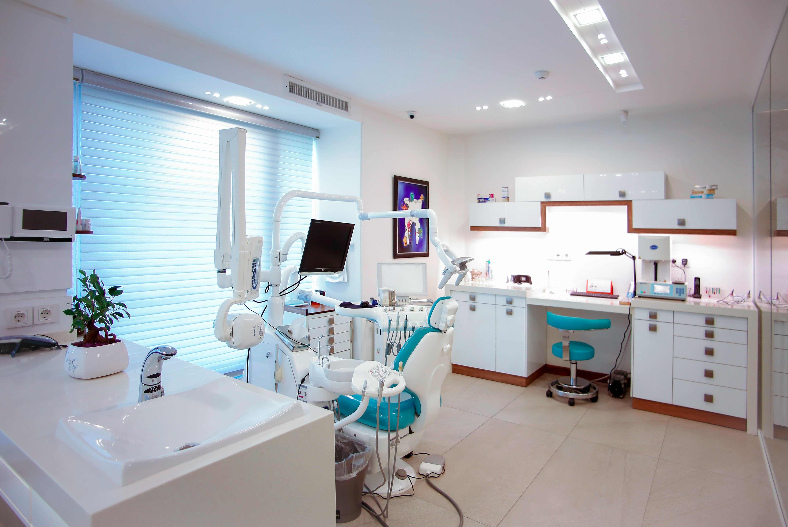
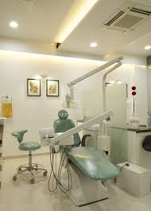
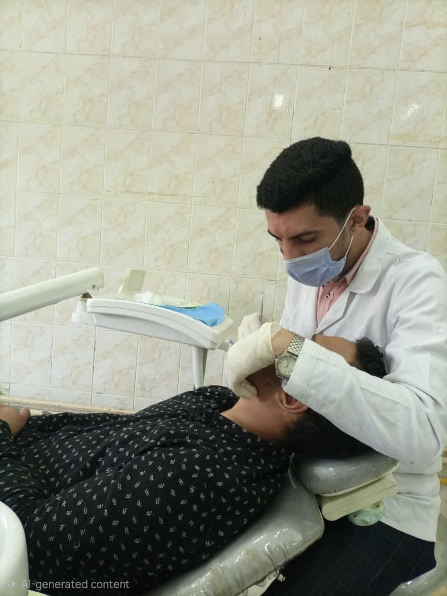

معرض الصور
من داخل العيادة
شوف العيادة والأجهزة — علشان تطمن قبل ما تيجي.



رعاية شخصية لأسنانك بأحدث الأجهزة وبأسعار مناسبة. راحتك أولويتنا من أول زيارة.

ابتسامتك بتعبر عن ثقتك بنفسك، وصحة أسنانك جزء أساسي من صحتك العامة. في عيادة إمام بنقدم رعاية شخصية لكل مريض — بنسمعك، بنشرحلك، وبنعالجك بأحدث الأساليب. هدفنا إنك تطلع مرتاح ومبسوط من أول زيارة.
اعرف أكتر عن الدكتورمن الكشف الدوري لحد التجميل — كل الخدمات بأحدث الأجهزة وبأسعار مناسبة.
فحص شامل، تنظيف جير، وخطة علاج مخصصة. الوقاية أهم من العلاج.
جلسات تبييض آمنة بنتائج واضحة من أول زيارة.
حشوات بلون الأسنان الطبيعي — مش هتفرق عن الأصلية.
تيجان وكباري ثابتة بخامات عالية الجودة لكل حالة.
خلع عادي وجراحي بأقل ألم ممكن مع متابعة.
تعامل خاص مع الأطفال علشان يحبوا زيارة الدكتور.
شوف العيادة والأجهزة — علشان تطمن قبل ما تيجي.

عيادة إمام أسسها دكتور متخصص بخبرة ٥ سنوات. كل مريض بالنسبالنا حالة فريدة — بناخد وقتنا في الشرح والعلاج علشان تطلع مرتاح ومطمن.
أول مرة أروح دكتور أسنان وأطلع مرتاح. الدكتور شرحلي كل حاجة قبل ما يبدأ، وفعلاً محسيتش بأي ألم. أنصح بيه جداً.
وديت بنتي وكنت خايفة تعيط — بس الدكتور تعامله مع الأطفال ممتاز بجد .
عملت تركيبة عنده وشكلها طبيعي جداً. الأسعار معقولة مقارنة بأماكن تانية كتير. المكان نضيف ومنظم.
حالات حقيقية من العيادة — اسحب الخط في منتصف الصورة لترى الفرق بنفسك.


* كل الصور بإذن المرضى. النتائج تختلف من حالة لأخرى.
كلمنا على الواتساب أو اتصل بينا — والموعد علينا.
املأ البيانات وسنتواصل معك قريباً.